2023 में लेने के लिए 14 सर्वश्रेष्ठ मुफ्त सीएसएस लेआउट पाठ्यक्रम
यहां सीएसएस लेआउट (ग्रिड, फ्लेक्सबॉक्स और पोजिशनिंग) सीखने के लिए सर्वश्रेष्ठ मुफ्त ऑनलाइन पाठ्यक्रमों के साथ एक व्यापक गाइड है।

क्या आप अपने तत्वों को अपने लेआउट में केंद्रित करने के लिए संघर्ष कर रहे हैं? जैसे ही आप कोई छोटा परिवर्तन करते हैं, क्या प्रतिक्रियाशील लेआउट टूट जाते हैं? क्या आप अभी भी फ्लोट्स का उपयोग कर रहे हैं?
यदि उपरोक्त सभी प्रश्नों का उत्तर हाँ है, तो यह आपके सीएसएस कौशल को अपग्रेड करने का समय है।
फ्लेक्सबॉक्स और ग्रिड को समझने के लिए बहुत सारे ट्यूटोरियल हैं। इस गाइड में, मैं सबसे पहले फ्लेक्सबॉक्स पाठ्यक्रम और ट्यूटोरियल सूचीबद्ध करूंगा क्योंकि बहुत सारी अवधारणाएं जैसे कि जस्टिफाई-कंटेंट और एलाइन-आइटम भी ग्रिड में मौजूद हैं।
एक बार जब आप फ्लेक्स से अधिक परिचित हो जाते हैं, तो ग्रिड को समझना आसान हो जाता है। फिर, ग्रिड के माध्यम से जाने के बाद, मैं आपको उन दोनों का एक साथ उपयोग करने से परिचित कराने के लिए यहां कुछ पाठ्यक्रमों को भी सूचीबद्ध करूंगा और आशा करता हूं कि यह आपको बेहतर उत्तरदायी वेबसाइट बनाने में मदद करेगा।
जब आप किसी प्रोजेक्ट पर काम कर रहे होते हैं तो फ्लेक्सबॉक्स और ग्रिड अधिकांश भारी भारोत्तोलन कर सकते हैं लेकिन कभी-कभी, आप पृष्ठ को स्क्रॉल करते समय कुछ तत्वों को शीर्ष पर चिपकाना चाहते हैं (जैसे नेवबार) या आप एक तत्व को रखना चाहते हैं एक विशिष्ट स्थान। यह फ्लेक्सबॉक्स और ग्रिड के साथ प्रभावी ढंग से पूरा नहीं किया जा सकता है, और यह तब होता है जब पोजिशनिंग खेल में आती है। इसलिए, मैं पोजिशनिंग एलिमेंट्स पर भी कुछ ट्यूटोरियल जोड़ूंगा।
मैं व्यक्तिगत रूप से फ्लेक्सबॉक्स की तुलना में अधिक बार ग्रिड का उपयोग कर रहा हूं, क्योंकि ग्रिड फ्लेक्सबॉक्स के समान कार्यक्षमता प्रदान कर सकता है, लेकिन यह सामग्री पर अधिक नियंत्रण भी प्रदान करता है।
यहाँ मेरी शीर्ष पसंद हैं। पाठ्यक्रम विवरण पर जाने के लिए एक पर क्लिक करें:
| अवधि | कार्यभार | संक्षिप्त |
| 1. Flexbox.io (वेस बोस) | 2 घंटे | कुछ वास्तविक जीवन के उदाहरणों के साथ फ्लेक्सबॉक्स को समझने का सबसे अच्छा कोर्स |
| 2. फ्लेक्सबॉक्स फ्रॉगी (कोडपिप) | 1 घंटा | इंटरएक्टिव लर्निंग के माध्यम से उपलब्ध सर्वोत्तम फ्लेक्सबॉक्स कोर्स |
| 3. फ्लेक्सबॉक्स के लिए इंटरएक्टिव गाइड (जोश डब्ल्यू कोमू) | 1 घंटा | उदाहरणों के साथ सर्वश्रेष्ठ फ्लेक्सबॉक्स पाठ्यक्रम |
| 4. सीएसएस फ्लेक्सबॉक्स (स्क्रिम्बा) | 1 घंटा | YouTube पर सर्वश्रेष्ठ फ्लेक्सबॉक्स कोर्स |
| 5. सीएसएस ग्रिड (वेस बॉस) | चार घंटे | वेस बोस द्वारा सीएसएस ग्रिड पर एक व्यापक पाठ्यक्रम |
| 6. सीएसएस ग्रिड (FollowAndrew) | 1 घंटा | सीएसएस ग्रिड के लिए सबसे अच्छी शिक्षण तकनीकों में से एक |
| 7. सीएसएस ग्रिड (नेट निन्जा) | 2 घंटे | नेट निंजा से एक और बढ़िया ट्यूटोरियल |
| 8. सीएसएस ग्रिड पर वीडियो (लेआउटलैंड) | चार घंटे | इस ट्यूटोरियल ऑन ग्रिड्स से यूनिट्स और मिनमैक्स के बारे में कुछ बढ़िया व्याख्या |
| 9. सबग्रिड (केविन पॉवेल) का उपयोग करके एक मजबूत ग्रिड सिस्टम बनाना | 1 घंटा | ग्रिड के साथ अपनी मूलभूत जानकारी प्राप्त करने के बाद सबग्रिड्स के उपयोग को स्पष्ट करना |
| 10. सीएसएस ग्रिड ट्यूटोरियल: उत्तरदायी डिजाइन उदाहरण (वेबकोड सीखें) | 2 घंटे | उत्तरदायी डिज़ाइन बनाने के लिए ग्रिड का उपयोग करें |
| 11. CSS लेआउट (एडम अर्गाइल) | 7 गंटे | कुछ व्यावहारिक उदाहरणों के साथ ग्रिड और फ्लेक्स दोनों का उपयोग करना सीखें |
| 12. सीएसएस पोजिशनिंग ट्यूटोरियल - सापेक्ष बनाम निरपेक्ष बनाम फिक्स्ड बनाम स्टिकी | क्रैश कोर्स (FollowAndrew) | 1 घंटा | पोजिशनिंग को समझने के लिए सबसे व्यापक ट्यूटोरियल में से एक |
| 13. सीएसएस पोजिशनिंग ट्यूटोरियल (नेट निंजा) | 1 घंटा | कुछ सरल उदाहरणों के साथ सीखने की स्थिति। |
| 14. स्थिति निरपेक्ष और उत्तरदायी लेआउट (केविन पॉवेल) | 1 घंटा | निरपेक्ष और सापेक्ष स्थिति सीखना और कुछ ग्रिड का उपयोग करना |
| 15. बोनस सामग्री (त्वरित धोखा और अन्य चीजें) | वह | अपने लेआउट बनाने में आपकी मदद करने के लिए संसाधनों और उपकरणों का एक संग्रह |
CSS में बॉक्स मॉडल क्या है?
CSS में हर चीज के चारों ओर एक बॉक्स होता है, और इन बॉक्स को समझना CSS के साथ अधिक जटिल लेआउट बनाने में सक्षम होने या अन्य आइटम के साथ आइटम को संरेखित करने के लिए महत्वपूर्ण है। (एमडीएन डॉक्स)
बॉक्स मॉडल में कई घटक होते हैं जो तत्व के अंतिम लेआउट को बनाने के लिए मिलकर काम करते हैं। इन घटकों में शामिल हैं:
- सामग्री: मुख्य सामग्री, जैसे पाठ या छवि, जो तत्व के भीतर प्रदर्शित होती है।
- पैडिंग: सामग्री और सीमा के बीच का स्थान, और यह तत्व के समग्र आकार को बड़ा या छोटा करके प्रभावित करता है।
- सीमा: एक रेखा जो तत्व को घेरती है और पृष्ठ पर अन्य तत्वों से अलग करती है।
- मार्जिन: सीमा के बाहर का स्थान, तत्व की सीमा और पृष्ठ पर आसन्न तत्वों के बीच। तत्व के चारों ओर जगह बनाकर मार्जिन पृष्ठ पर तत्वों के अंतर को प्रभावित करता है।
प्रभावी और अच्छी तरह से डिज़ाइन किए गए वेब पेजों के निर्माण के लिए बॉक्स मॉडल को समझना आवश्यक है, क्योंकि यह पेज पर तत्वों के लेआउट और रिक्ति को निर्धारित करने में महत्वपूर्ण भूमिका निभाता है। फ्लेक्सबॉक्स और ग्रिड जैसे अन्य सीएसएस लेआउट टूल के साथ बॉक्स मॉडल का उचित उपयोग करने से स्वच्छ और उत्तरदायी वेब डिज़ाइन प्राप्त हो सकते हैं।
फ्लोट्स मर चुके हैं। आगे क्या होगा?
वेब डिज़ाइन के शुरुआती दिनों में, प्राथमिक लेआउट टूल "फ्लोट" गुण था। फ़्लोट्स मूल रूप से छवियों के चारों ओर पाठ लपेटने के लिए थे, लेकिन डेवलपर्स को जल्दी ही एहसास हुआ कि उनका उपयोग लेआउट के लिए भी किया जा सकता है। जबकि फ़्लोट्स पिछले तरीकों की तुलना में एक बड़ा सुधार था, उनकी सीमाएँ थीं और उनके साथ काम करना मुश्किल हो सकता था।
फ्लेक्सबॉक्स को CSS3 में एक लेआउट मोड के रूप में पेश किया गया था, जो अधिक आधुनिक और लचीला समाधान प्रदान करता है। फ्लेक्सबॉक्स ने एक कंटेनर के भीतर तत्वों की स्थिति और आकार को नियंत्रित करना आसान बना दिया और लचीले ढंग से वस्तुओं को व्यवस्थित करने का अधिक सहज तरीका प्रदान किया। उत्तरदायी और लचीले लेआउट बनाने के लिए यह जल्दी से एक लोकप्रिय उपकरण बन गया।
ग्रिड को बाद में CSS ग्रिड लेआउट में और भी अधिक शक्तिशाली लेआउट टूल के रूप में पेश किया गया था। ग्रिड ने डेवलपर्स को जटिल द्वि-आयामी लेआउट बनाने की अनुमति दी, जिससे पंक्तियों और स्तंभों में तत्वों के प्लेसमेंट को नियंत्रित करना आसान हो गया। ग्रिड ने लेआउट डिजाइन के लिए एक अधिक संरचित दृष्टिकोण भी पेश किया, जिससे अधिक कुशल और रखरखाव योग्य कोड हो सकता है।
ये अधिक आधुनिक लेआउट उपकरण अधिक लचीलापन, प्रदर्शन और पहुंच प्रदान करते हैं, जिससे डेवलपर्स के लिए वेब के लिए जटिल और उत्तरदायी डिज़ाइन बनाना आसान हो जाता है।
यदि आप सुनिश्चित नहीं हैं कि किस लेआउट टूल का उपयोग करना है, तो मैं अनुशंसा करता हूंयह वीडियोकेविन पॉवेल द्वारा।
एक अधिक व्यापक गाइड में पाया जा सकता हैफ्लेक्सबॉक्सऔरजालएमडीएन डॉक्स में प्रलेखन। यदि आप इसके बारे में वीडियो और इंटरैक्टिव सामग्री के साथ और अधिक सीखना चाहते हैं तो पढ़ना जारी रखें।

सर्वोत्तम पाठ्यक्रम मार्गदर्शिका पद्धति
मैंने इस रैंकिंग को पिछले सर्वोत्तम पाठ्यक्रम मार्गदर्शिकाओं में उपयोग की गई अब आजमाई हुई पद्धति के बाद बनाया है (आप उन सभी को यहाँ पा सकते हैं). इसमें तीन चरणों वाली प्रक्रिया शामिल है:
- शोध करना: I started by leveraging Class Central’s database with 100K ऑनलाइन पाठ्यक्रम and 200K+ reviews. Then, I made a preliminary selection of 54 पाठ्यक्रम by rating, reviews, and bookmarks.
- मूल्यांकन करना: I read through reviews on Class Central, Reddit, and course providers to understand what other learners thought about each course and combined it with my own experience as a सिखाने वाला.
- चुनना: Well-made courses were picked if they presented valuable and engaging content and they have to fit in a set of criteria and be ranked accordingly: comprehensive curriculum, affordability, release date, ratings and enrollments.
पाठ्यक्रम रैंकिंग सांख्यिकी
यहाँ रैंकिंग के बारे में कुछ समग्र आँकड़े दिए गए हैं:
- इस रैंकिंग के सभी पाठ्यक्रमों के लिए HTML/CSS के बुनियादी ज्ञान की आवश्यकता होती है।
- इस लेख में सूचीबद्ध सभी पाठ्यक्रम निःशुल्क हैं।
- अधिकांश पाठ्यक्रम सीएसएस-एनीमेशन नौसिखियों के लिए उपयुक्त हैं।
आगे की हलचल के बिना, शीर्ष चयनों के माध्यम से चलते हैं।
1. Flexbox.io (वेस बोस)
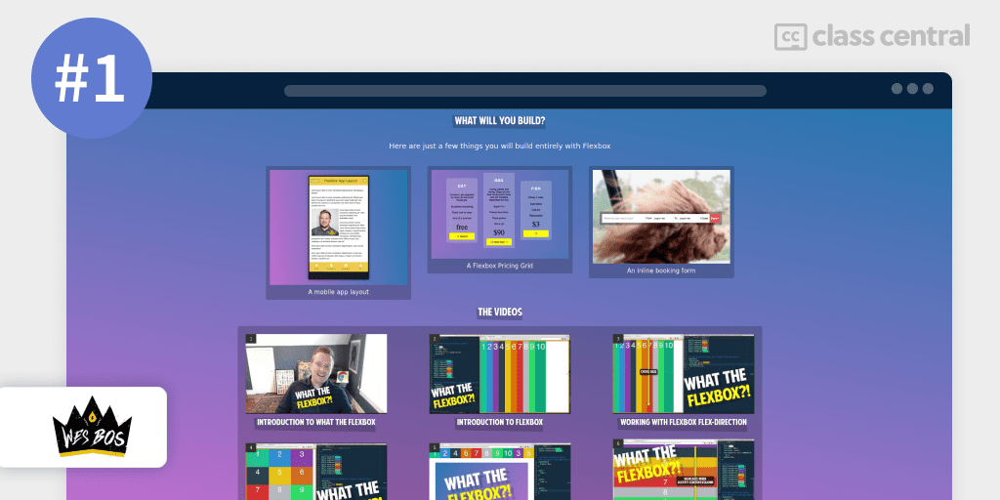
मेरी पहली पसंद हैफ्लेक्सबोक्स.ीोपाठ्यक्रम की पेशकश कीमुक्तवेस बोस द्वारा।
Wes Bos का "Flexbox.io" कोर्स CSS Flexbox सीखने के लिए एक व्यापक मार्गदर्शिका है। पाठ्यक्रम फ्लेक्सबॉक्स की मूल बातें शामिल करता है और आपको सिखाता है कि उत्तरदायी और लचीले वेब डिज़ाइन बनाने के लिए इस शक्तिशाली लेआउट टूल का उपयोग कैसे करें।
फ्लेक्सबॉक्स और इसकी प्रमुख अवधारणाओं के परिचय के साथ शुरू होने वाले पाठ्यक्रम को आसान-से-अनुसरण करने वाले मॉड्यूल में व्यवस्थित किया गया है। आप सीखेंगे कि एक कंटेनर के भीतर तत्वों की स्थिति और आकार को नियंत्रित करने के लिए फ्लेक्सबॉक्स का उपयोग कैसे करें, और विभिन्न स्क्रीन आकारों के अनुकूल उत्तरदायी डिज़ाइन कैसे बनाएं।
आप क्या सीखेंगे
पाठ्यक्रम उन्नत विषयों को भी शामिल करता है, जैसे सीएसएस ग्रिड के साथ फ्लेक्सबॉक्स का उपयोग करना, जटिल नेस्टेड लेआउट बनाना, और फ्लेक्सबॉक्स का उपयोग अन्य लेआउट टूल जैसे मीडिया प्रश्नों के साथ करना।
आप कैसे सीखेंगे
पूरे पाठ्यक्रम के दौरान, आप हाथों-हाथ परियोजनाओं के माध्यम से काम करेंगे जो आपके सीखने को सुदृढ़ करते हैं और वास्तविक दुनिया के परिदृश्यों में फ्लेक्सबॉक्स को लागू करने में आपकी सहायता करते हैं। आप सामान्य लेआउट पैटर्न के लिए फ्लेक्सबॉक्स का उपयोग करना सीखेंगे, जैसे कि नेविगेशन मेनू बनाना, ग्रिड-आधारित लेआउट बनाना और तत्वों को लंबवत और क्षैतिज रूप से संरेखित करना।
| प्रदाता | फ्लेक्सबोक्स.ीो |
| प्रशिक्षक | वेस बॉश |
| स्तर | शुरुआती |
| कार्यभार | 2 घंटे |
| प्रमाणपत्र | कोई नहीं |
मजेदार तथ्य
- He also offers a free course on कमांड लाइन सीखना and छोटी परियोजनाओं के लिए बहुत अभ्यास के साथ जावास्क्रिप्ट.
2. फ्लेक्सबॉक्स फ्रॉगी (कोडपिप)
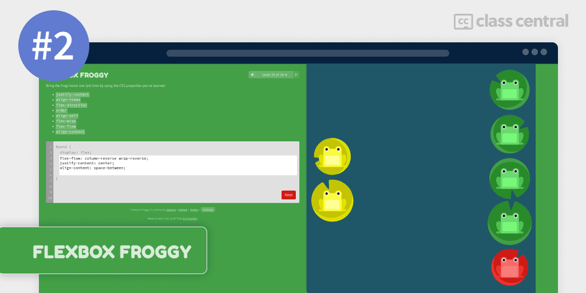
“फ्लेक्सबॉक्स मेंढककोडपिप द्वारा एक गेम-आधारित शिक्षण मंच है जो एक इंटरैक्टिव और मजेदार तरीके से सीएसएस फ्लेक्सबॉक्स की मूल बातें सिखाता है।
पाठ्यक्रम शुरुआती और अनुभवी डेवलपर्स के लिए समान रूप से उपयुक्त है, और बिना किसी पूर्व ज्ञान के फ्लेक्सबॉक्स का एक सौम्य परिचय प्रदान करता है। यदि आपने इसे पहले इस्तेमाल किया है लेकिन अपनी समझ को मजबूत करना चाहते हैं तो यह आपके फ्लेक्सबॉक्स कौशल पर ब्रश करने का एक शानदार तरीका है।
आप क्या सीखेंगे
पाठ्यक्रम को फ्लेक्सबॉक्स की मौलिक अवधारणाओं को सीखने में मदद करने के लिए डिज़ाइन किया गया है जो आकर्षक और यादगार है।
आप कैसे सीखेंगे
पाठ्यक्रम में चुनौतियों की एक श्रृंखला शामिल है जिसके लिए आपको लिली पैड पर मेंढकों को व्यवस्थित करने के लिए फ्लेक्सबॉक्स गुणों का उपयोग करने की आवश्यकता होती है। प्रत्येक चुनौती पिछली चुनौती पर आधारित होती है, जिसमें रास्ते में नई अवधारणाएँ और विशेषताएँ प्रस्तुत की जाती हैं। आप एक कंटेनर के भीतर तत्वों के संरेखण और रिक्ति को नियंत्रित करने के साथ-साथ विभिन्न स्क्रीन आकारों में समायोजित होने वाले उत्तरदायी डिज़ाइन बनाने का तरीका जानेंगे।
| प्रदाता | कोडपिप |
| स्तर | शुरुआती |
| कार्यभार | 1 घंटा |
| प्रमाणपत्र | कोई नहीं |
मजेदार तथ्य
- Codepip has unlimited Flex exercises on his pro plan. You can find more games यहाँ
- He also has a similar offering for Grids called the ग्रिड गार्डन
3. फ्लेक्सबॉक्स के लिए एक इंटरैक्टिव गाइड (जोश डब्ल्यू। कोमू)
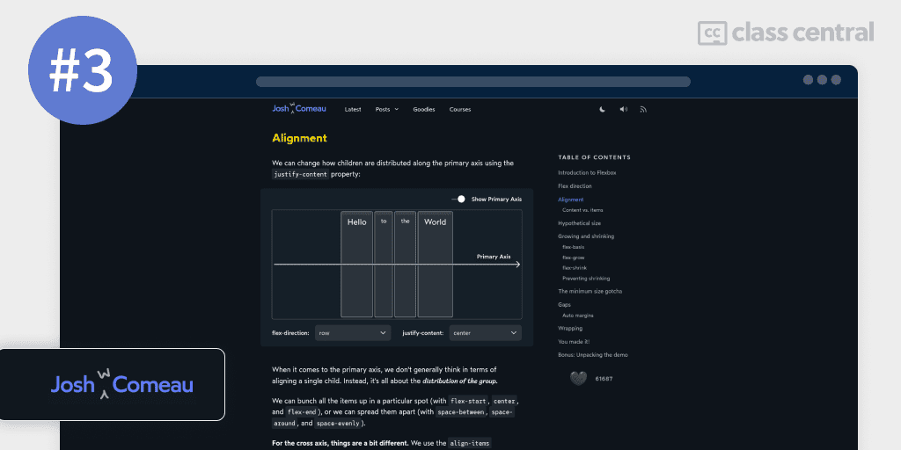
"फ्लेक्सबॉक्स के लिए इंटरएक्टिव गाइड” जोश डब्ल्यू. कोमू द्वारा सीएसएस फ्लेक्सबॉक्स के लिए एक व्यापक, फिर भी सुलभ, परिचय है। गाइड फ्लेक्सबॉक्स सीखने का एक इंटरैक्टिव और विज़ुअल तरीका प्रदान करता है, जिससे आपको व्यावहारिक उदाहरणों के माध्यम से अवधारणाओं और गुणों को समझने में मदद मिलती है।
आप क्या सीखेंगे
गाइड को खंडों में व्यवस्थित किया गया है जो फ्लेक्सबॉक्स के विभिन्न पहलुओं को कवर करता है, इसकी प्रमुख अवधारणाओं और गुणों के अवलोकन के साथ शुरू होता है। आप फ्लेक्सबॉक्स में उपलब्ध विभिन्न लेआउट मोड्स के बारे में जानेंगे, जैसे कि पंक्ति, कॉलम और रैप, और एक कंटेनर के भीतर तत्वों की स्थिति और आकार को कैसे नियंत्रित करें।
गाइड में उन्नत विषयों को भी शामिल किया गया है, जैसे कि उत्तरदायी डिजाइनों के लिए फ्लेक्सबॉक्स का उपयोग करना, ग्रिड-आधारित लेआउट बनाना और अन्य लेआउट टूल्स जैसे मीडिया प्रश्नों के साथ फ्लेक्सबॉक्स का उपयोग करना।
आप कैसे सीखेंगे
पूरे गाइड में, आप प्रदान किए गए उदाहरणों के साथ प्रयोग कर सकते हैं और वास्तविक समय में अपने परिवर्तनों के परिणाम देख सकते हैं, जिससे यह फ्लेक्सबॉक्स को एक व्यावहारिक और इंटरैक्टिव तरीके से सीखने का एक आदर्श संसाधन बन जाता है।
| प्रशिक्षक | जोश डब्ल्यू कोमू |
| स्तर | शुरुआती |
| कार्यभार | 1 घंटा |
| प्रमाणपत्र | कोई नहीं |
मजेदार तथ्य
- Josh has a blog where he covers other topics such as animation and Grid यहाँ.
4. सीएसएस फ्लेक्सबॉक्स (स्क्रिम्बा)
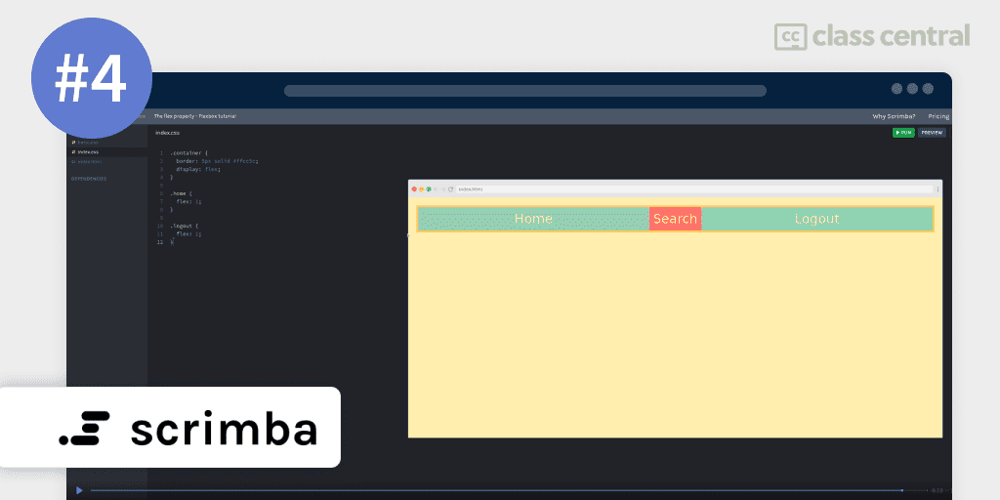
फ्लेक्सबॉक्स ट्यूटोरियल प्लेलिस्टस्क्रिम्बा द्वारा एक व्यापक वीडियो श्रृंखला है जो सीएसएस फ्लेक्सबॉक्स के लिए चरण-दर-चरण परिचय प्रदान करती है।
आप क्या सीखेंगे
ट्यूटोरियल फ्लेक्सबॉक्स की मूल बातें से लेकर उन्नत उपयोग तक विषयों की एक विस्तृत श्रृंखला को कवर करते हैं, जिससे यह शुरुआती और उन्नत उपयोगकर्ताओं दोनों के लिए एक आदर्श संसाधन बन जाता है।
प्लेलिस्ट फ्लेक्सबॉक्स की प्रमुख अवधारणाओं, जैसे लेआउट मोड, फ्लेक्स कंटेनर और फ्लेक्स आइटम, और सरल और जटिल लेआउट बनाने के लिए फ्लेक्सबॉक्स का उपयोग कैसे करें, की व्याख्या करके शुरू होती है। आप यह भी सीखेंगे कि फ्लेक्सबॉक्स का उपयोग करके कंटेनर में तत्वों की स्थिति और आकार को कैसे नियंत्रित किया जाए, और फ्लेक्सबॉक्स का उपयोग करके उत्तरदायी डिजाइन कैसे बनाएं।
आप कैसे सीखेंगे
आप प्लेलिस्ट के साथ अनुसरण कर सकते हैं लेकिन उनकी वेबसाइट पर एक इंटरैक्टिव ट्यूटोरियल भी है।
| चैनल | स्क्रिम्बा |
| प्रदाता | यूट्यूब |
| प्रशिक्षक | प्रति हेराल्ड बोर्गेन |
| स्तर | मध्यम |
| कार्यभार | 1 घंटा |
| दृश्य | 350 हजार |
| को यह पसंद है | 10 हजार |
| प्रमाणपत्र | कोई नहीं |
मजेदार तथ्य
- This same tutorial was taken by freecodecamp as their Flex tutorial. You can view it यहाँ
- Scrimba also has a Grid tutorial accessible यहाँ
5. सीएसएस ग्रिड (वेस बॉस)
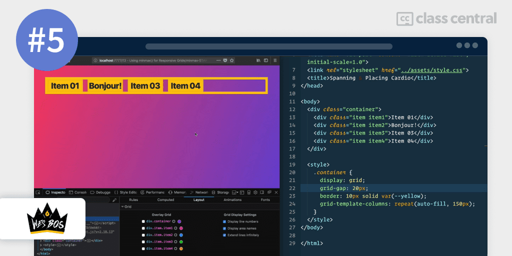
सीखने के लिए प्लेलिस्टसीएसएस ग्रिडवेस बोस द्वारा एक व्यापक वीडियो श्रृंखला है जो सीएसएस ग्रिड के लिए चरण-दर-चरण परिचय प्रदान करती है। प्लेलिस्ट में सीएसएस ग्रिड की बुनियादी बातों से लेकर उन्नत उपयोग तक विषयों की एक विस्तृत श्रृंखला शामिल है, जो इसे शुरुआती और उन्नत उपयोगकर्ताओं दोनों के लिए एक आदर्श संसाधन बनाती है।
आप क्या सीखेंगे
प्लेलिस्ट सीएसएस ग्रिड की प्रमुख अवधारणाओं, जैसे ग्रिड कंटेनर, ग्रिड आइटम, पंक्तियों और स्तंभों, और सरल और जटिल लेआउट बनाने के लिए सीएसएस ग्रिड का उपयोग करने के तरीके के बारे में बताते हुए शुरू होती है। आप यह भी सीखेंगे कि ग्रिड के भीतर तत्वों को कैसे रखा जाए, तत्वों के आकार और अंतर को कैसे नियंत्रित किया जाए, और CSS ग्रिड का उपयोग करके उत्तरदायी डिज़ाइन कैसे बनाएं।
आप कैसे सीखेंगे
संपूर्ण प्लेलिस्ट में, शामिल अवधारणाओं और गुणों को समझने में आपकी मदद करने के लिए प्रशिक्षक उदाहरण और कोड स्निपेट के साथ स्पष्ट और संक्षिप्त स्पष्टीकरण का उपयोग करता है। ट्यूटोरियल इस तरह से डिज़ाइन किए गए हैं कि आप अपनी गति से सीख सकते हैं, और आप किसी भी विषय को आवश्यकतानुसार आसानी से देख सकते हैं।
| प्रदाता | यूट्यूब |
| प्रशिक्षक | वेस बॉश |
| स्तर | मध्यम |
| कार्यभार | चार घंटे |
| नामांकन | 350 हजार |
| प्रमाणपत्र | कोई नहीं |
मजेदार तथ्य
- Wes’s course for लर्निंग ग्रिड is also accessible here
6. सीएसएस ग्रिड (FollowAndrew)
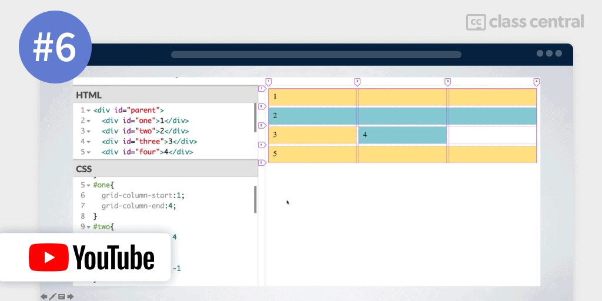
मैं व्यक्तिगत रूप से का बहुत बड़ा प्रशंसक हूंएंड्रयूशिक्षण शैली। वह ग्रिड को समझने के लिए ब्लॉक बनाकर शुरू करता है और फिर आवश्यक जानकारी डालता है, जिससे यह समझने में मदद मिलती है कि चीजें कैसे लेआउट को बेहतर तरीके से प्रभावित कर रही हैं।
आप क्या सीखेंगे
पाठ्यक्रम सीएसएस ग्रिड की प्रमुख अवधारणाओं, जैसे ग्रिड कंटेनर, ग्रिड आइटम, पंक्तियों और स्तंभों, और सरल और जटिल लेआउट बनाने के लिए सीएसएस ग्रिड का उपयोग कैसे करें, की व्याख्या करके शुरू होता है। आप यह भी सीखेंगे कि ग्रिड के भीतर तत्वों को कैसे रखा जाए, तत्वों के आकार और अंतर को कैसे नियंत्रित किया जाए, और CSS ग्रिड का उपयोग करके उत्तरदायी डिज़ाइन कैसे बनाएं।
आप कैसे सीखेंगे
पाठ्यक्रम वीडियो को देखकर और साथ काम करके सीखने की सुविधा प्रदान करता है।
| प्रदाता | यूट्यूब |
| प्रशिक्षक | एंड्रयू |
| स्तर | शुरुआती |
| कार्यभार | 1 घंटा |
| प्रमाणपत्र | कोई नहीं |
मजेदार तथ्य
- I would recommend to see him use उत्तरदायी लेआउट के लिए ग्रिड after finishing understanding the course
- He also explains the use of flex to create a nav bar यहाँ
7. सीएसएस ग्रिड (नेट निन्जा)
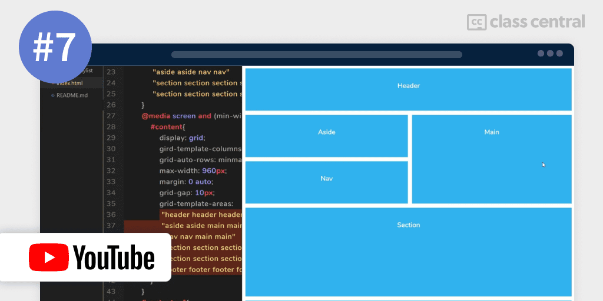
यह हैएक और ट्यूटोरियलनेट निंजा से। ट्यूटोरियल ग्रिड की व्याख्या करता है और फिर उदाहरणों के साथ अंत में उन्हें समझाने के लिए आगे बढ़ता है।
आप क्या सीखेंगे
नेटनिन्जा यह समझाते हुए शुरू होता है कि ग्रिड की मूल बातें आपको समझाने से पहले लेआउट बनाते समय ग्रिड एक उपयोगी उपकरण क्यों हो सकता है। आप CSS ग्रिड, कॉलम, रो, ग्रिड लाइन, नेस्टेड ग्रिड, आइटम को अलाइन और जस्टिफाई करना, 12-कॉलम ग्रिड बनाना, मोज़ेक लेआउट, ग्रिड एरिया और रिस्पॉन्सिव ग्रिड उदाहरण के बारे में जानेंगे।
आप कैसे सीखेंगे
पाठ्यक्रम सीखने और अभ्यास के साथ वीडियो प्रदान करता है।
| प्रदाता | यूट्यूब |
| प्रशिक्षक | शॉन |
| चैनल | नेट निन्जास |
| स्तर | शुरुआती |
| कार्यभार | 2 घंटे |
| नामांकन | 560 कि |
| प्रमाणपत्र | कोई नहीं |
मजेदार तथ्य
- I also recommend looking into यह प्लेलिस्ट for another responsive layout made using Grids..
- He also explains flex यहाँ.
8. सीएसएस ग्रिड पर वीडियो (लेआउट लैंड)
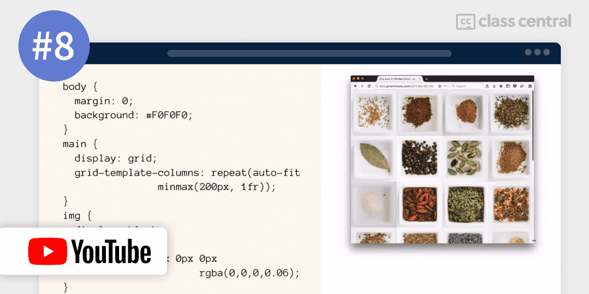
कोर्स आपको देता हैसीएसएस ग्रिड का अवलोकनऔर इसकी क्षमताएं, जो इसे CSS ग्रिड में नए लोगों के लिए एक शानदार शुरुआती बिंदु बनाती हैं। ये ट्यूटोरियल आपको सिखाते हैं कि अधिक लचीले डिज़ाइन के लिए विभिन्न CSS ग्रिड इकाइयों का उपयोग कैसे करें। यह यह भी बताता है कि लेआउट डिज़ाइन को बढ़ाने के लिए सफेद स्थान का उपयोग कैसे करें। यह यह भी बताता है कि ओवरलैपिंग तत्वों के साथ दिखने में आकर्षक डिज़ाइन बनाने के लिए आप CSS ग्रिड का उपयोग कैसे कर सकते हैं।
आप क्या सीखेंगे
आप सीएसएस ग्रिड की मूल बातें सीखेंगे और फिर लेआउट बनाने के लिए फ्लेक्स और ग्रिड का एक साथ उपयोग करने में विस्तार करेंगे। यह आपको अंतराल के उपयोगकर्ता और उत्तरदायी लेआउट बनाने के लिए मिनमैक्स भी सिखाएगा।
आप कैसे सीखेंगे
आप वीडियो के साथ पालन करके सीखेंगे।
| प्रदाता | यूट्यूब |
| प्रशिक्षक | लेआउट भूमि |
| स्तर | मध्यम |
| कार्यभार | 3 घंटे |
| दृश्य | 60 हजार |
| को यह पसंद है | zk |
| प्रमाणपत्र | कोई नहीं |
9. सबग्रिड (केविन पॉवेल) का उपयोग करके एक मजबूत ग्रिड सिस्टम बनाना
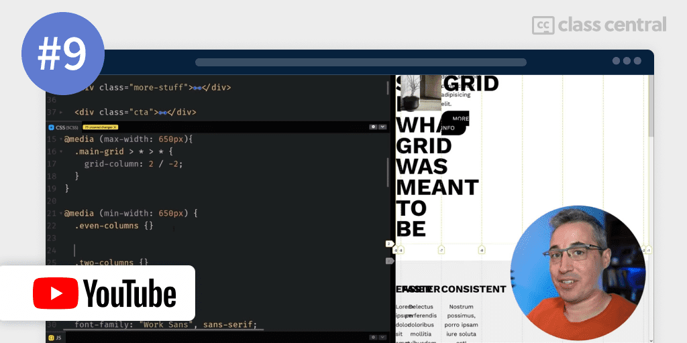
सबग्रिडग्रिड लेआउट में एक खंड है। बॉक्स मॉडल सभी बॉक्स के भीतर बॉक्स के बारे में है। सबग्रिड्स आपको ग्रिड्स के भीतर ग्रिड्स को नेस्ट करने की अनुमति देते हैं।
आप क्या सीखेंगे
आप ग्रिड और सबग्रिड का उपयोग करके एक सरल उत्तरदायी लेआउट बनाकर सबग्रिड की कार्यक्षमता सीखेंगे।
आप कैसे सीखेंगे
यह वीडियो के साथ काम करके पूरा किया जाएगा।
| प्रदाता | यूट्यूब |
| प्रशिक्षक | केविन पॉवेल |
| स्तर | मध्यम |
| कार्यभार | 1 घंटा |
| नामांकन | 30 हजार |
| प्रमाणपत्र | कोई नहीं |
मजेदार तथ्य
- Once you have completed this video, it would help to look at some more videos of Kevin on subGrids such as: सबग्रिड के साथ आसान और अधिक सुसंगत लेआउट and आप इसे सबग्रिड के बिना नहीं कर सकते
- He has also collaborated with इस वीडियो पर एलेक्स ट्रॉस्ट to explore subGrids
- You can also check this video to create a मोज़ेक लेआउट सीएसएस ग्रिड का उपयोग कर and a चिनाई लेआउट वीडियो यहाँ
10. सीएसएस ग्रिड ट्यूटोरियल: उत्तरदायी डिजाइन उदाहरण (लर्नवेबकोड)

अवधिग्रिड लेआउट के भीतर तत्वों को केंद्रित करने के साथ-साथ अतिरिक्त रैपर divs की आवश्यकता से बचने के तरीके के लिए विभिन्न तकनीकों को शामिल करता है।
आप क्या सीखेंगे
पाठ्यक्रम में ग्रिड लेआउट के भीतर तत्वों के मैन्युअल प्लेसमेंट को भी शामिल किया गया है, और यह सिखाता है कि ग्रिड क्षेत्रों का उपयोग करके जटिल और लचीले ग्रिड लेआउट कैसे बनाएं। इसके अतिरिक्त, पाठ्यक्रम दिखाता है कि मीडिया प्रश्नों या ब्रेकप्वाइंट की आवश्यकता के बिना उत्तरदायी ग्रिड लेआउट कैसे बनाएं, और अद्वितीय और आकर्षक डिजाइन बनाने के लिए सीएसएस ग्रिड का उपयोग करने के रचनात्मक तरीकों की पड़ताल करता है।
आप कैसे सीखेंगे
आप वीडियो के साथ पालन करके सीखेंगे।
| प्रदाता | यूट्यूब |
| प्रशिक्षक | वेबकोड सीखें |
| स्तर | मध्यम |
| कार्यभार | 1 घंटा |
| दृश्य | 30 हजार |
| को यह पसंद है | zk |
| प्रमाणपत्र | कोई नहीं |
अतिरिक्त जानकारी
- You can find the basics covered for flex and Grids यहाँ.
11. CSS लेआउट (एडम अर्गाइल)
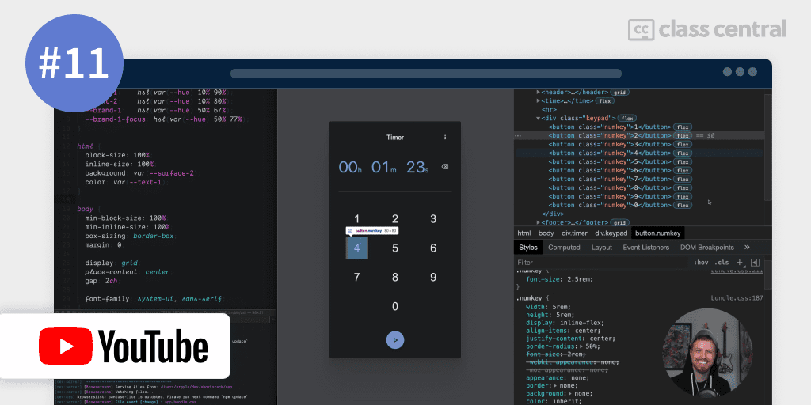
लेआउट आवश्यकताओं के आधार पर ग्रिड और फ्लेक्सबॉक्स दोनों का एक साथ उपयोग किया जाना चाहिए।यहाँ एक वीडियो प्लेलिस्ट हैदिखा रहा है कि परियोजनाओं में उन दोनों का उपयोग कैसे करें।
आप क्या सीखेंगे
आप फ्लेक्स और ग्रिड दोनों का उपयोग करना और कुछ लेआउट बनाना सीखेंगे। पाठ्यक्रम में कई हैंड्स-ऑन प्रोजेक्ट शामिल हैं जैसे टाइमर ऐप बनाना, आंकड़ों के साथ एक उत्तरदायी डैशबोर्ड, एक मीडिया स्क्रोलर हिंडोला और एक मिनी इंस्टा-फ्रेंड लिस्ट।
आप कैसे सीखेंगे
आप YouTube पर वीडियो के साथ पाठ्यक्रम का अनुसरण करके सीखेंगे।
| प्रदाता | यूट्यूब |
| प्रशिक्षक | एडम अर्गल |
| स्तर | मध्यम |
| कार्यभार | 7 गंटे |
| प्रमाणपत्र | कोई नहीं |
12. सीएसएस पोजिशनिंग ट्यूटोरियल - सापेक्ष बनाम निरपेक्ष बनाम फिक्स्ड बनाम स्टिकी | क्रैश कोर्स (FollowAndrew)

सीएसएस पोजिशनिंग ट्यूटोरियलएंड्रयू द्वारा पोजीशनिंग को समझने के लिए सबसे व्यापक ट्यूटोरियल में से एक है।
आप क्या सीखेंगे
एंड्रयू के पोजिशनिंग ट्यूटोरियल में विभिन्न सीएसएस पोजिशनिंग प्रकार और उनके मूल्य शामिल हैं, जिनमें सापेक्ष, निरपेक्ष, निश्चित और चिपचिपा स्थिति शामिल है। यह HTML दस्तावेज़ प्रवाह की अवधारणाओं की भी पड़ताल करता है और कैसे स्थिति प्रकार इसे प्रभावित करते हैं, साथ ही जेड-इंडेक्स का उपयोग करने वाले तत्वों का स्टैकिंग क्रम। पाठ्यक्रम में शामिल अवधारणाओं को समझने और अभ्यास करने में उपयोगकर्ताओं की मदद करने के लिए पाठ्यक्रम में लाइव कोड नमूने शामिल हैं।
आप कैसे सीखेंगे
आप YouTube पर वीडियो के साथ पाठ्यक्रम का अनुसरण करके सीखेंगे।
| प्रदाता | यूट्यूब |
| प्रशिक्षक | एंड्रयू |
| स्तर | शुरुआती |
| कार्यभार | 1 घंटा |
| प्रमाणपत्र | कोई नहीं |
13. सीएसएस पोजिशनिंग ट्यूटोरियल (नेट निंजा)
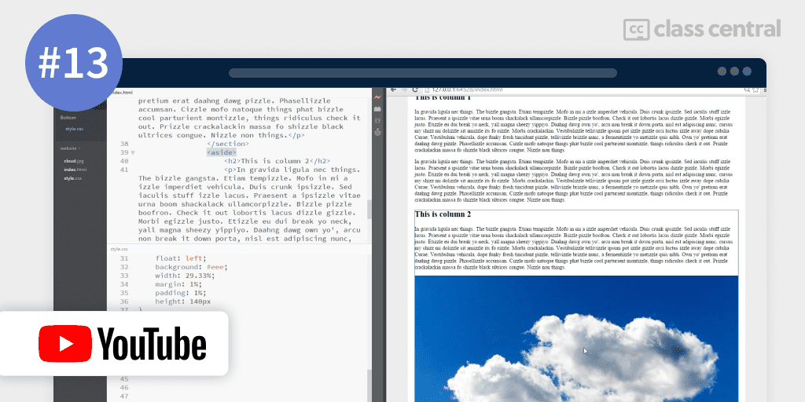
यह सीएसएस पोजिशनिंग ट्यूटोरियलएक व्यापक प्लेलिस्ट है जो विभिन्न प्रकार की सीएसएस पोजीशनिंग को कवर करती है।
आप क्या सीखेंगे
आप सामान्य दस्तावेज़ प्रवाह, फ्लोटिंग एलिमेंट्स, क्लियरिंग फ़्लोट्स, फ़्लोटिंग कॉलम, टेक्स्ट कॉलम, सापेक्ष स्थिति, पूर्ण स्थिति, निश्चित स्थिति और जेड-इंडेक्स स्टैकिंग ऑर्डर के बारे में जानेंगे। ट्यूटोरियल में बॉक्स मॉडल की समीक्षा और CSS पोजिशनिंग का परिचय भी शामिल है। ट्यूटोरियल के अंतिम भाग में क्लिपिंग सामग्री शामिल है। चर्चा की गई अवधारणाओं की बेहतर समझ के लिए पाठ्यक्रम लाइव कोड नमूने प्रदान करता है।
आप कैसे सीखेंगे
आप YouTube पर वीडियो के साथ पाठ्यक्रम का अनुसरण करके सीखेंगे।
| प्रदाता | यूट्यूब |
| प्रशिक्षक | शॉन |
| चैनल | नेट निंजा |
| स्तर | शुरुआती |
| कार्यभार | 2 घंटे |
| नामांकन | 660k |
| प्रमाणपत्र | कोई नहीं |
मजेदार तथ्य:
आप भी साथ चल सकते हैंयह वीडियो ट्यूटोरियलमारियो वेब पेज बनाकर स्थिति को समझने के लिए।
14. स्थिति निरपेक्ष और सापेक्ष लेआउट (केविन पॉवेल)
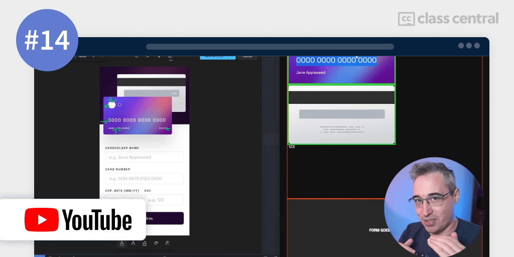
एक बार जब आप उपरोक्त ट्यूटोरियल पूरा कर लेते हैं और पूर्ण स्थिति और सापेक्ष स्थिति के उपयोग को समझना चाहते हैं, तो मैं देखने की सलाह देता हूंयह वीडियोकेविन पॉवेल द्वारा। वह क्रेडिट कार्ड (आगे और पीछे) बनाकर एक लेआउट बनाकर पूर्ण स्थिति और सापेक्ष स्थिति की व्याख्या करता है और सुनिश्चित करता है कि वे भी उत्तरदायी होंगे।
आप क्या सीखेंगे
आप इस वीडियो के साथ एक व्यावहारिक उदाहरण के साथ निरपेक्ष और सापेक्ष स्थिति की अपनी समझ को और गहरा करेंगे।
आप कैसे सीखेंगे
आप YouTube पर वीडियो के साथ पाठ्यक्रम का अनुसरण करके सीखेंगे।
| प्रदाता | यूट्यूब |
| प्रशिक्षक | केविन पॉवेल |
| स्तर | मध्यम |
| कार्यभार | 1 घंटा |
| नामांकन | 30 हजार |
| प्रमाणपत्र | कोई नहीं |
15. बोनस सामग्री (त्वरित धोखा और अन्य चीजें)
निम्नलिखित सामग्री को पूरा करने के बाद, आप फ्लेक्स और ग्रिड के लिए एक चीट-शीट प्राप्त करना चाह सकते हैं और यह यहाँ पाया जा सकता है:
- फ्लेक्सबॉक्स Sheet
- ग्रिडबी उदाहरण
- जाल Sheet
- LearnCSSGrid (जोनाथन सुह)
- Flexbox और Grid(egghead.io) के साथ लैंडिंग पेज बनाएं
- टेस्ट फ्लेक्सबॉक्स नियम
- टेस्ट ग्रिड नियम
यदि आपके पास और लिंक हैं जो मदद कर सकते हैं, तो कृपया टिप्पणियों में उनका उल्लेख करने में संकोच न करें।